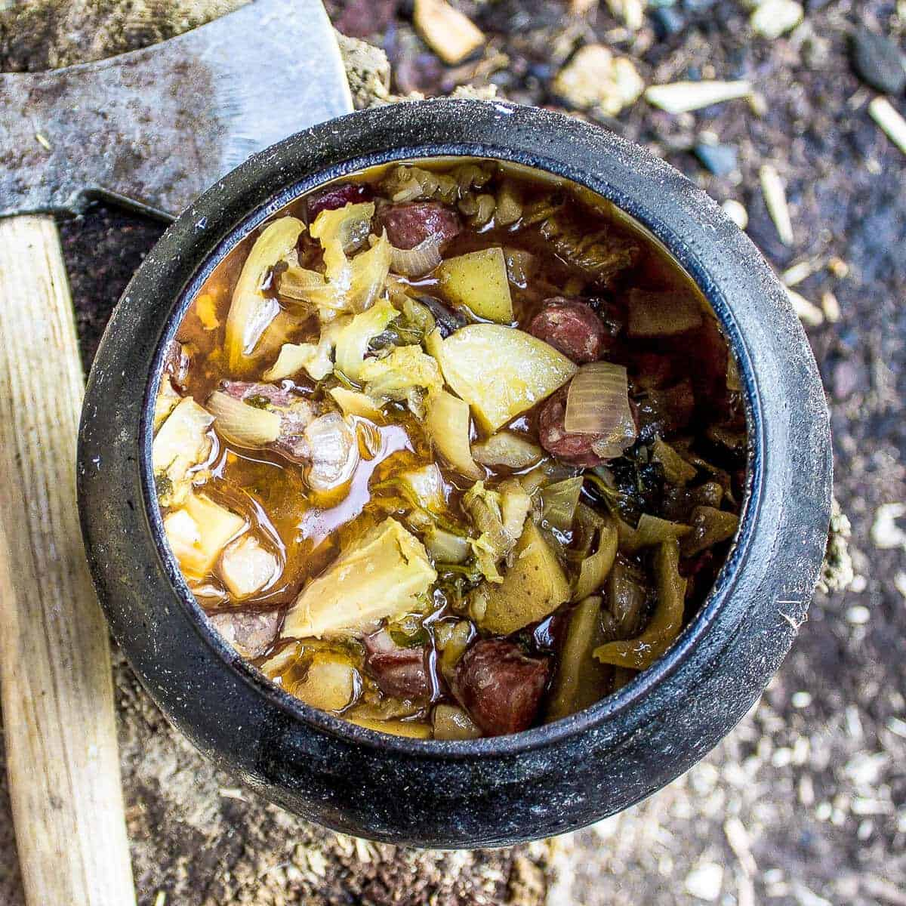

Odin's Table: Viking Stew

Image and Recipe Source: PantsDownApron
This recipe from PantsDownApronGlobalKitchenTravels.com is a great recipe for those vikings with busy schedules as you can set this in the morning before you go off to raid the work day, by using a slow cooker, and coming back home to a hearty and
warm stew, with little to no prep.
For a hearty stew:
Preparation Details
- Prep time: 10 minutes
- Cook time: 5 hours
- Total time: 5 hours 10 minutes
Ingredients:
- 2 large onions
- 4 cloves garlic
- 2 large potatoes
- 300 grams Cubed meat of choice
- 200 grams smoked sausage (sliced)
- 1/2 cabbage
- 500 ml dark beer
- 200 ml water
- 300 ml vegetable or chicken stock
Instructions
- Place all the ingredients together into the pot and mix it well.
- Cook it at low medium temperature for about 5 hours monitoring it every now and again adding water or stock if needed.
- Season with salt and pepper when done.
- You can also chop up some herbs(parsley, marjoram, dill)and add it in when done.